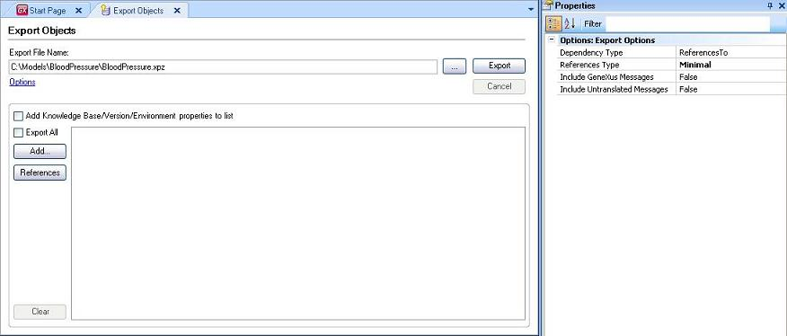
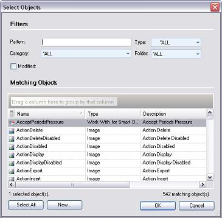
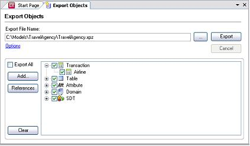
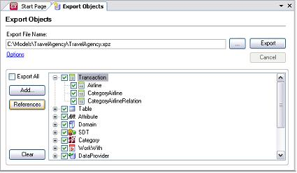

Knowledge Manager Export provides a mechanism for sharing Knowledge Base information among other GeneXus developers.
You can export one or more objects from a Knowledge Base. Some options are available to help you with this task. By default, all objects are exported (the Export All checkbox is checked). You may export, however, only a few of them (Add button) and also add those objects referenced by the ones you select (References button).

If you select the Options link, you are able to modify some options in the Properties window, by the following:
- Include untranslated messages. Include the untranslated messages in the distribution file, by default these messages are not included.
- Include GeneXus messages. Include the GeneXus messages in the language object, by default these messages are not included.
- References Type. This option is used when: Including objects through the Select Object dialog box (the selected objects' references are calculated), dragging and dropping an object into the dialog box (the dragged objects' references are calculated); and when pressing the references button (references are calculated for all the objects in the tree).
- None - Does not include any reference.
- Minimal (default) - Includes references of the object needed to be imported into an empty KB. Includes references to attributes, domains and SDTs referenced by objects; in the case of transactions, table is included.
- All - Brings all referenced objects.
- Hard - It includes only hard references from the selected objects. The idea is to leave out weak references (a typical case, to prevent the master page from being included in the list when it is associated to a selected object by default, inheriting the property from the KB). Some examples of hard references are when an object is called from another object or when two objects are related through a NO default property.
- Dependency Type. export related objects which are referenced by or references to:
- ReferencesTo - exports objects the selected one references. For example; if object A calls B; the ReferencedTo option adds the B Object when exporting A.
- ReferencedBy - exports object referenced by the selected objects. For example; if object A calls B; the ReferencedTo option adds the A Object when exporting B.
Tip: use the Object References dialog to navigate object dependencies.
Export with selected objects: Push Add button, then select objects from Select Objects dialog window.

If you need to add objects referenced by those you selected push the Reference button.
 
|